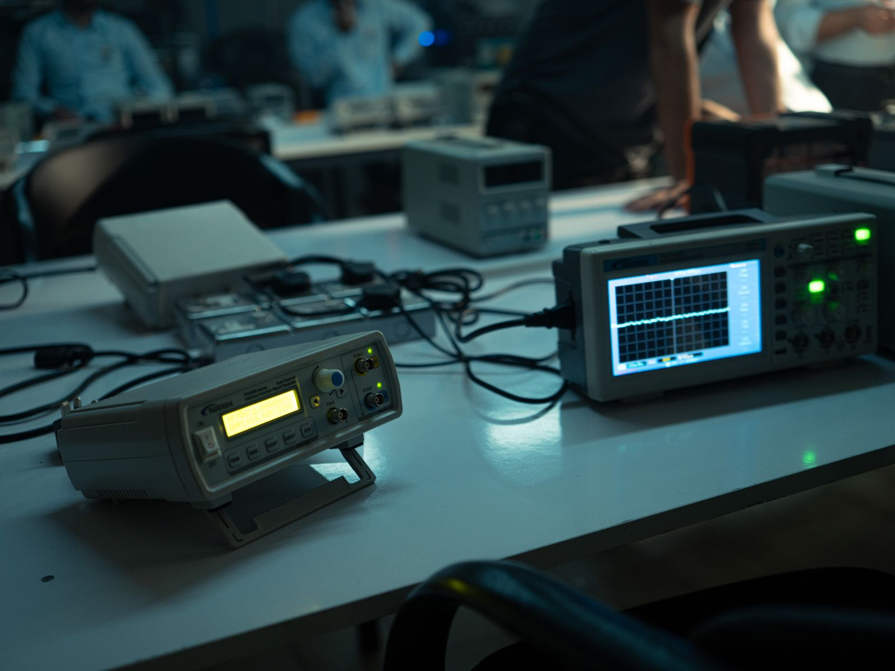

A qubit count is not a capability.
Korhonen Quantum Hardware is the practice of Dr Aino Korhonen, a cryogenic quantum-hardware engineer. I bring transmon devices up from a cold finger to a measured processor: cryogenic wiring and thermalisation, cooldown discipline, and coherence characterisation for quantum-computing companies and national laboratories.
The honesty is in the units. Coherence varies device to device and day to day, so this site prints measured distributions with their dates — medians and spreads, never a best-ever number. A qubit count without error rates is marketing, and you will not find one here.

The ladder: where a qubit has to live
A dilution refrigerator is a staircase of temperatures, and every stage earns its place by carrying heat, cables or the device itself. The tool further down this page runs on these same stages.
The laboratory
Where the engineers, the paperwork and the optimism live. Every cable that reaches the device starts here, carrying room-temperature heat with it unless it is stopped on the way down.
Pulse-tube first stage
The radiation shield and the first heat-sinking of every loom. Unglamorous, and the cause of more failed cooldowns than any stage below it.
The 4 K plate
Amplifiers, circulators and the bulk of the wiring are anchored here. Most of a fridge's working hardware never goes any colder — and never needs to.
The still
Pumps the helium mixture that makes the cold below possible. A stage you feel in the plumbing and the pump lines, not in the data.
The cold plate
The last warm stop. At 5 GHz the bath here still holds about 0.1 thermal photons per mode — quiet enough for wiring, far too loud to measure a qubit honestly. The tool below shows the arithmetic.
The mixing chamber
Where the device sits, at a thermal occupation near 10⁻⁷ photons per mode. Everything the practice does — every anchor, filter and shield — exists to protect this stage.
Cold & coherence, computed in the open
Two printed relations, worked line by line. The tool reads its constants and its device table from this page, so the numbers it shows are the numbers printed beside it — check them with a pencil.
1 · Thermal occupation — why the mixing chamber matters
A qubit at frequency f, sitting in a bath at temperature T, shares its mode with thermal photons. Their mean number, n̄, is set by one relation. Step the frequency, pick a stage, and watch what the last two stages of the ladder are for.
Relation — n̄ = 1 / (ehf/kBT − 1), hence hf/kB = f × 47.99 mK per GHz
Printed range 4.00–6.00 GHz, in 0.25 GHz steps — the band the practice's transmons are designed into.
Marginal. At the cold plate, about one mode in ten holds a thermal photon at 5 GHz — quiet enough for wiring, too loud for an honest qubit measurement. Keep cooling.
2 · The gate-error rule of thumb
The roughest useful question in the building: given a device's measured T₁, what does a gate of a given length cost in relaxation alone? Pick a device from Table D — its T₁ is a median with a spread and a date, because that is what a measurement is — then step the gate time.
Table D — example devices, measured by the practice| Device | Type | T₁ median | Spread (IQR · n) | Measured |
|---|---|---|---|---|
| Fixed-frequency transmon | 212 µs | 168–257 µs · n = 14 | Mar 2026 | |
| Fixed-frequency transmon | 148 µs | 121–176 µs · n = 12 | Jan 2026 | |
| Tunable transmon | 96 µs | 74–118 µs · n = 10 | Nov 2025 |
Printed range 10–60 ns, in 5 ns steps.
K-07 “Aava” — T₁ median 212 µs
Rule of thumb, labelled as one. ε ≈ tgate/T₁ prices relaxation during the gate and nothing else — not leakage, not control error, not crosstalk, and not the two-qubit gate, which is where real error budgets usually die. Characterisation reports from this practice carry measured benchmarking numbers; this panel teaches scale, not specifications.
What the practice takes on
Five services, each with the clients it serves, the systems it touches and its current status. If a service is not listed, the practice does not sell it — in particular, it does not sell qubit counts.
Device bring-up
From a mounted chip to a measured processor: first cooldown, wiring verification, spectroscopy, coherence baseline.
Coherence characterisation
T₁, T₂ and gate benchmarking reported as distributions over the full device, with dates and conditions — the report is the product.
Cryogenic wiring & thermalisation
Loom design, attenuation and filtering budgets, anchoring at every stage — the work Case file 01 is about.
Cryostat design review
A written review of a planned system against its heat loads and device count, before the purchase order — see Case file 03.
Cooldown supervision & fault-finding
On site for the cooldown that matters, or the one that went wrong. Thermal faults found by measurement, not by swapping parts.
What it costs, and what moves it
What moves the price
Channel count and cooldown cycles, first. Every line into the fridge is hardware, anchoring and a day of verification; every cooldown is four to six days of calendar whether the device behaves or not.
Device risk stays with the client. A device that measures badly is a finding, not a discount event.
The conclusion never moves the price. A report that says your device is limited by its dielectric costs exactly what a clean report costs.
Arithmetic, not a quote: engagements are scoped in writing first, and the scope — not this panel — sets the fee. Travel outside Finland is billed at cost and agreed in advance.
Our chip was blamed for a fridge fault for five months. Aino found the unanchored loom in the second cooldown, and the same silicon measured five times the T₁. The redesign budget went back in the bank.
Head of Hardware · Quantum-computing company, 12-qubit programme
Client name withheld under NDA; the measurements from this engagement are Case file 01 on the projects page.
Have a device that won't cool — or won't cohere?
One contact path, answered by the engineer who would do the work.